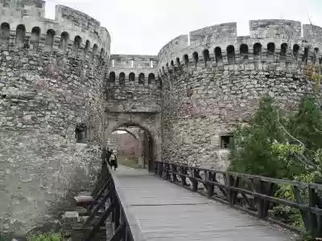

SRBIJA
Beogradska tvrđava podignuta je na grebenu iznad ušća Save u Dunav u razdoblju od 2. do 18. veka kao kompleks odbrambenog karaktera. Tvrđava je danas
svojevrstan muzej istorije Beograda. Ovu celinu čini sama Beogradska tvrđava, podeljena na Gornji i Donji grad, i park Kalemegdan.
Zbog izuzetnog strateškog značaja, na ovom mestu je u 2. veku podignuto utvrđenje – rimski kastrum, kao stalni vojni logor IV Flavijeve legije. Posle
rušenja od strane Gota i Huna, utvrđenje je obnovljeno u prvim decenijama 6. veka. Nepuno stoleće kasnije, razaraju ga Avari i Sloveni.

Uz utvrđenje na bregu iznad ušća Save u Dunav, nastao je antički Singidunum, a na istom mestu i slovenski Beograd. Beogradska tvrđava često je rušena
i obnavljana. Iznad rimskih zidina stoje srpski bedemi, a preko njih, turske i austrijske fortifikacije. U 12. veku vizantijski car Manojlo Komnin
podigao je na rimskim ruševinama novi kastel. U prvim decenijama 14. veka. ovo malo utvrđenje na bregu prošireno je do rečnih obala.
Pod vlašću despota Stefana Lazarevića, kao novo središte Srbije, Beograd je ojačan prostranim utvrđenjima Gornjeg i Donjeg grada. U starom kastelu
podignut je despotov dvor, a na Savi je dograđeno ratno pristanište. U okviru bedema razvio se napredan srednjovekovni grad.
Novo razdoblje započelo je austrijsko-turskim ratom. Kao ključno utvrđenje u središtu ratnih sukoba tokom 18. veka, Tvrđava je tri puta rekonstruisana.
Porušen je stari kastel, a veliki deo srednjovekovnih bedema prekrile su nove fortifikacije. Pod austrijskom okupacijom, 1717-39. godine, posle
izgradnje novih modernih utvrđenja, Beogradska tvrđava je predstavljala jedno od najjačih vojnih uporišta u Evropi. Građena je prema projektima
generala Nikole Doksata Demoreza, Švajcarca u austrijskoj službi. Igrom sudbine, u svitanje jednog martovskog dana 1738. godine, zbog poraza kod Niša,
upravo pred bedemima Tvrđave streljan je njen graditelj. Povratku Turaka u Beograd 1740. godine, prethodila su rušenja svih novopodignutih utvrđenja.
Do kraja 18. veka Beogradska tvrđava je dobila konačni oblik. U ratnim razaranjima tokom proteklih decenija porušeni su gotovo svi objekti u Gornjem i
Donjem gradu, a bedemi znatno oštećeni.
Na prilazu Gornjem gradu nekada se širilo prostrano tvrđavsko polje – Kalemegdan. Posle povlačenja Turaka u drugoj polovini 19. veka, polje je
pretvoreno u park. Iz pravca centra Beograda, preko Kalemegdana, u Beogradsku tvrđavu se ulazi kroz Stambol kapiju (unutrašnja i spoljna) i Sahat
kapiju. U srednjovekovno utvrđenje ulazilo se sa istočne strane kroz Zindan-kapiju i Despotovu kapiju Gornjeg grada.
Ostali značajni sačuvani objekti u Gornjem gradu su:
Na Gornjem gradu se nalaze i simbol Beograda – spomenik „Pobednik“, spomenik despotu Stefanu Lazareviću, Crkva Ružica i Kapela svete Petke.
Celo priobalno područje Beogradske tvrđave, uz Dunav i Savu, obuhvata Donji grad, gde se u srednjem veku nalazio glavni deo beogradskog naselja, koji je bedemina opasao despot Stefan Lazarević. Donjem gradu prilazi se kroz Vidin kapiju i Mračnu kapiju, a među retkim sačuvanim objektima izdvajaju se:
Danas najlepši i najveći beogradski park, Kalemegdan je u vreme dok je Tvrđava bila glavno vojno uporište Beograda, služio da se neprijatelj osmotri
i sačeka za borbu. Zbog toga i njegov naziv potiče od turskih reči „kale“ – grad, to jest tvrđava i „megdan“ – polje. Turci su Kalemegdan nazivali i
Fićir-bajir što znači „breg za razmišljanje”.
Na Kalemegdanu se nalaze Spomen obeležje predaje ključeva Beogradske tvrđave, Spomenik zahvalnosti Francuskoj, Umetnički paviljon „Cvijeta Zuzorić”,
Muzički paviljon, Veliko stepenište, Zoološki vrt, dečiji zabavni park, više spomenika i skulptura, sportskih igrališta i ugostiteljskih objekata.
Beogradska tvrđava je danas spomenik kulture od izuzetnog značaja, na kojoj se redovno održavaju kulturni, umetnički i zabavni događaji.